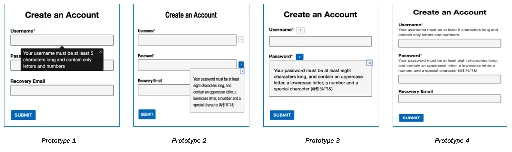
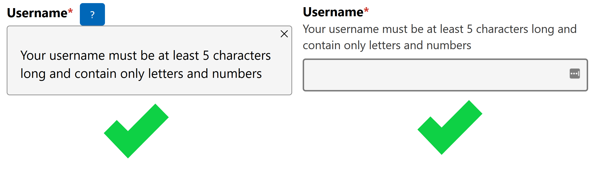

When we say "tooltip," we're speaking a visual language:
It appears on mouse hover
It overlays other content
It is in close proximity to whatever triggered it
There are commonalities in interaction:
Appears and disappears on hover
Interaction is optional and non-blocking
These are not commonalities in purpose
In contrast, let's consider these other patterns:
Table:
A structured presentation of data with two-dimensional relationships.
Tabs:
A group of related panels, of which only one is exposed at any given time.
Toolbar:
A set of related actions, often for modifying the same visually associated region.
Tree:
A list of hierarchical pieces of content or actionable items
Take 2, tooltips:
Extra, non-essential helper text?
No...
Alternative text?
No...
Tooltips are a visual pattern, not a functional pattern
Part 2: Tooltip Semantics
What is the tooltip role?
Let's get this out of the way...
If tooltips aren't a functional pattern, why do they have a role?
A contextual popup that displays a description for an element
(...)
Authors SHOULD ensure that elements with the role tooltip are referenced through the use of aria-describedby
Name vs. description
On the control the tooltip is naming/describing, regardless of where the trigger is:
Eye control and other pointers on links or buttons
ZoomText and magnifiers, where the pointer must be able to move over the tooltip
Zooming, dismissing, and WCAG 2.1
Content on Hover or Focus
Where receiving and then removing pointer hover or keyboard focus triggers additional content to become visible and then hidden, the following are true:
Dismissable: A mechanism is available to dismiss the additional content without moving pointer hover or keyboard focus, unless the additional content communicates an input error or does not obscure or replace other content;
Hoverable: If pointer hover can trigger the additional content, then the pointer can be moved over the additional content without the additional content disappearing;
Persistent: The additional content remains visible until the hover or focus trigger is removed, the user dismisses it, or its information is no longer valid.
Let's break down hoverable and persistent:
Now Dismissable for keyboard:
And finally, Dismissable for pointer users:
Where this doesn't work:
Modals
iFrames
Comboboxes
Touch & pointer
If escape doesn't work, what does?
Usability testing tooltips
Tooltips in forms: maybe don't?

User feedback:
iOS keyboard overlap
Not reviewable
Hard to show/hide
It "looked a bit annoying"
Recommendation: static text or toggle tips

Dismissing tooltips
Feedback:
Close buttons = good
Position is important
Control > Escape
Still not reviewable
Main takeaway: when given a close button, people use the close button.
My tooltip hot take:
WCAG 1.4.13's dismissable bullet is both prohitively difficult to implement in practice, and not ideal for magnification users. Don't follow it. Do better.
Do this instead:
Hover Cards
As a tooltip, this will:
Be read all at once by screen readers
Be inaccessible through keyboard
Be a pain for magnification users
Be a pain for everyone else, too
As a toggletip, this will:
Retain semantics
Give show/hide control to everyone
Be more discoverable
Part 4: Writing Tooltip Content
The Tooltip Content Paradox:
You must assume that some people will never be able to access the tooltip, so its content must not be necessary to use the UI.
But if the tooltip is unnecessary, why have it at all?
When UX doesn't consider ALL users, shouldn't it be known as "SOME User Experience" or... SUX? #a11y
This, of course, solved all remaining tooltip accessibility problems.
So, when you write your tooltips:
Keep it short (it is often not easily reviewable)
Keep in mind the purpose: naming or describing
Keep it non-essential
What now?
We spend so long trying to make existing visual patterns accessible, when we should be trying to address the original need in a way that works for everyone.
Next time you struggle over tooltip accessibility, ask:
Why am I adding this text to the UI? Where else could it go?
Consider toggletips for longer or structured content:
Consider static text for shorter strings:
Or be creative! Make something new, and make it work for everyone.